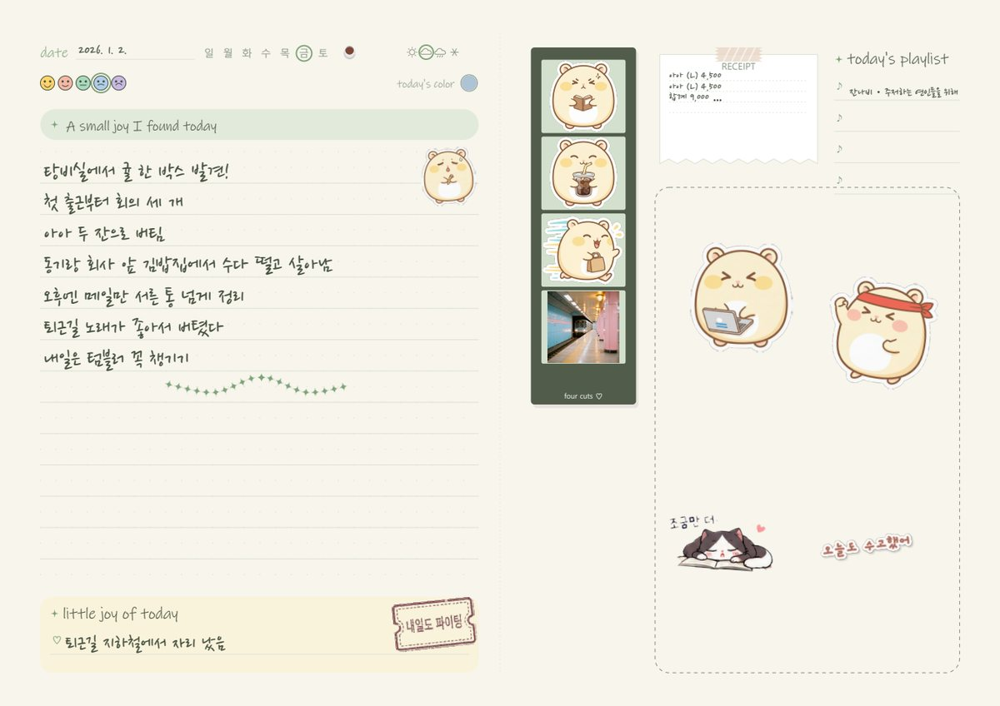
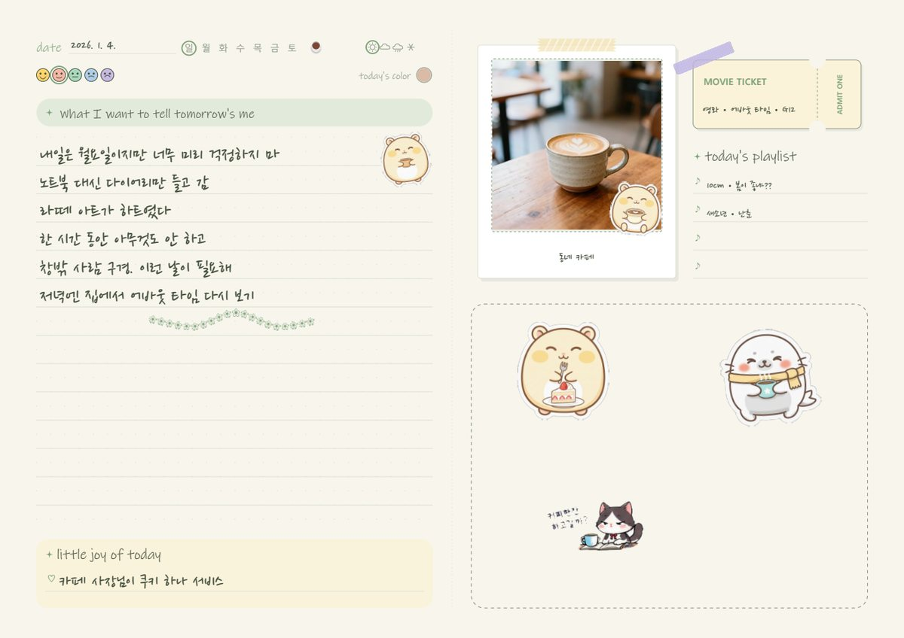
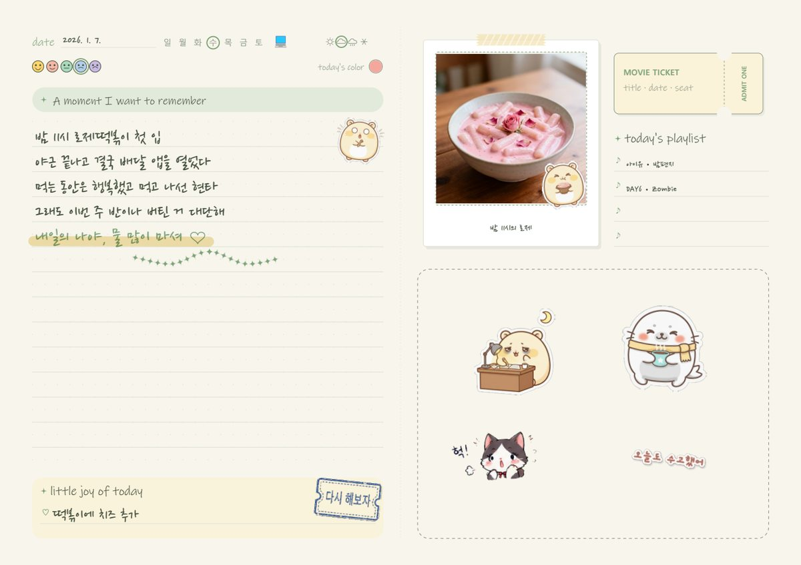
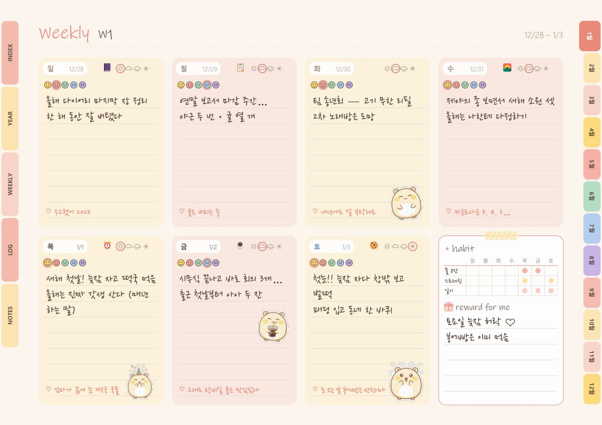
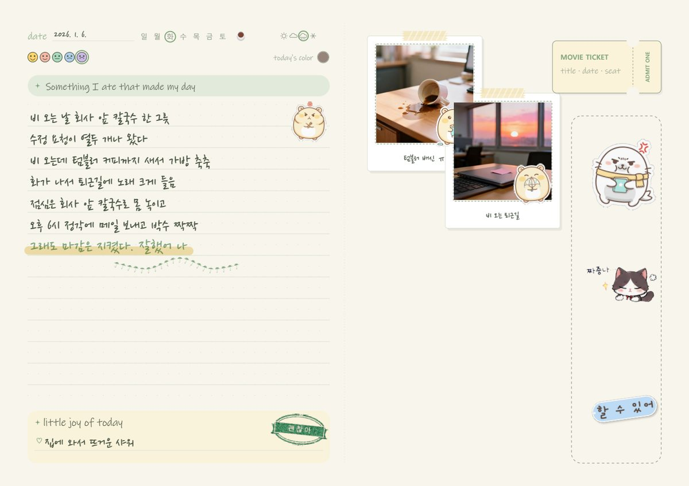
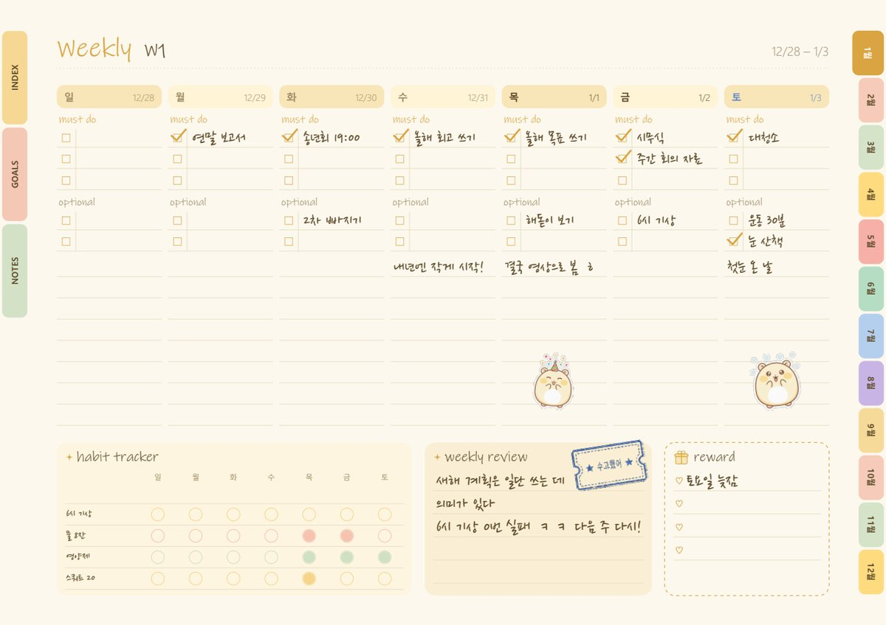
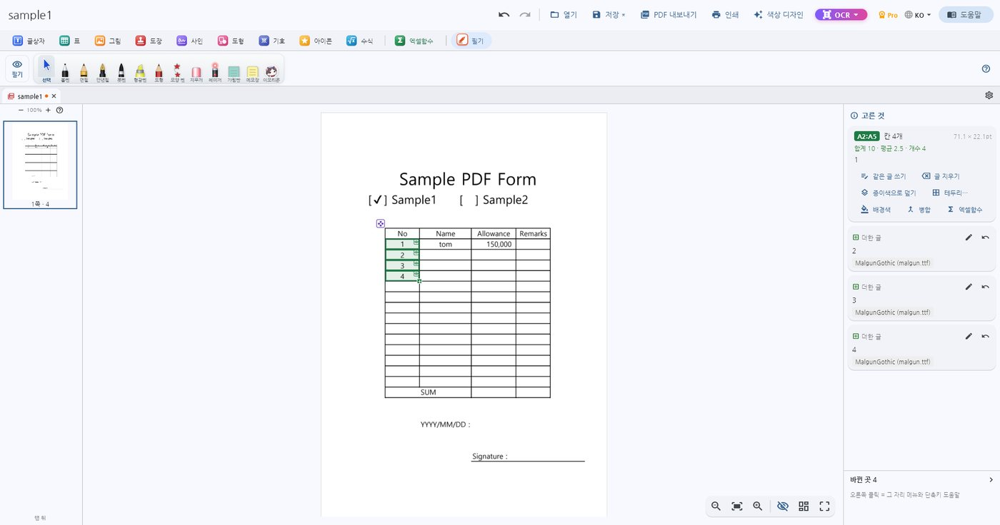
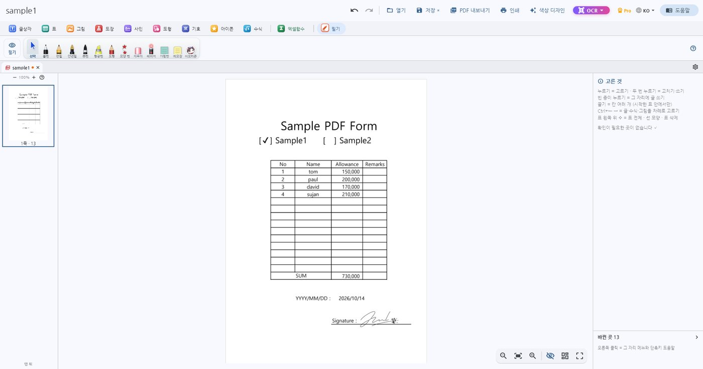

윈도 PC 앱 · 18개 언어
PDF 서식은 엑셀처럼,
PDF 서식은 엑셀처럼,
다이어리는 감성 그대로
받은 PDF 서식을 칸 단위로 바로 채우고, 도장·사인까지 찍어 내보냅니다. 같은 앱에서 스티커를 붙이며 다이어리를 꾸미고, AI 에게 말로 일기를 맡길 수도 있어요.
- 🔒 문서는 내 PC 안에서만
- 👤 회원가입 없음
- ⚡ 서식·노트는 인터넷 없이도
Windows 10 · 11 · 무료로 쓰고, 필요할 때만 Pro (한 번 구입)
지은의 2026
한 해 다이어리를 PC 에서 꾸며요
먼슬리 · 위클리 · 하루 일기 · 플래너 서식을 새 노트로 만들고, 손글씨 글꼴과 스티커·사진·마스킹테이프로 꾸밉니다. 아래는 모두 앱 안에서 만든 실제 샘플이에요.
지은 (26) — 자취 3년 차 · IT 회사 다니는 직장인. 갓생과 게으름 사이를 오가며, 소소한 기쁨을 하루 한 줄씩 남깁니다.






일할 때는
받은 PDF 서식, 다시 만들지 마세요
PDF 를 연 그 자리에서 칸을 눌러 씁니다. 화살표 · Tab · Enter 로 엑셀처럼 옮겨 다니고, 원래 글꼴·자간을 지키며 고칩니다.


▦엑셀처럼 칸 채우기=SUM(B2:B5) 같은 식 · 끌어서 이어 채우기
✎원래 글 그 자리에서 고치기글꼴 · 크기 · 자간을 그대로 지킵니다
㊞도장 · 스탬프 · 사인실물 크기로 찍고 바로 인쇄
⧉쪽 편집차례 바꾸기 · 지우기 · 다른 PDF 쪽 넣기
⌕스캔도 글자로 (OCR)그림 글자를 진짜 글자로 바꿉니다
✐필기 · 형광펜볼펜 · 만년필 · 캘리그래피펜 · 손떨림 보정
바쁜 날엔
"오늘 일기 써 줘" 한마디면 노트에
손쉬운PDF 를 Claude · ChatGPT 데스크톱 앱에 이어 두면, 대화에서 말한 하루가 내 다이어리 쪽에 날짜 · 기분 · 스티커와 함께 써집니다.
이어 두는 법
오늘 일기 써 줘 ✍️
- Claude 또는 ChatGPT 데스크톱 앱을 PC 에 내려받아 설치하고 로그인합니다.
- 손쉬운PDF 위쪽의 🤖 단추(AI 앱에 연결)를 누르고, 그 앱 옆 [연결] 을 누릅니다.
- 그 앱을 다시 켜고, 새 대화에서 하루 이야기를 들려주세요.
📱 폰에서 말로 쓰기
데스크톱 앱을 스마트폰과 원격으로 이어 두면, 폰 마이크로 말한 일기가 PC 의 노트에 써집니다 (PC 는 켜 두기).
- Claude — PC 의 Claude 에서
/rc를 입력해 스마트폰과 연결 - ChatGPT — 설정 › 연결 › '이 PC 를 제어할 수 있는 기기' 에 스마트폰 추가
값
서식 채우기는 모두 무료
처음 설치하면 14일 동안 Pro 를 모두 무료로 써 볼 수 있어요. 체험이 끝나도 무료 기능은 그대로입니다.
무료
기간 제한 없음
- 칸 채우기 · 원래 글 고치기 · 엑셀 식 · 이어 채우기
- 사인 · 오피스 스탬프 · 표 · 도형 · 아이콘
- 쪽 편집 · 찾기·바꾸기 · 필기 · 형광펜
- 새 노트 서식 10가지 · 저장 · 인쇄 · PDF 내보내기
Pro
앱 안에서 한 번 구입 · 구독 아님
- 감성 다이어리 · 플래너 서식 · 스티커 뭉치
- 한국식 도장 · 해외 인장 · 수식 · OCR
- 붓펜 · 캘리그래피펜 · 모양 펜 · 메모장
🔒
개인정보 처리방침 →
문서는 내 PC 밖으로 나가지 않아요
원본 PDF 는 그대로 두고, 고친 것은 따로 저장합니다. 개인정보를 모으지 않습니다.